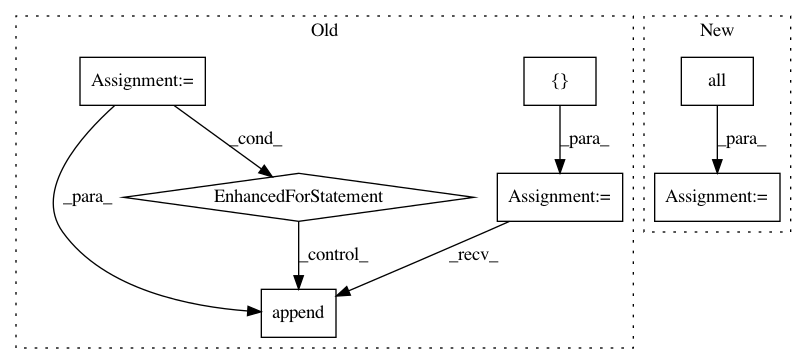

9a2903dac097a7f3633f6c828533ed385c7159c9,qucumber/utils/data.py,,extract_refbasis_samples,#Any#Any#,64
Before Change
:returns: The samples in the data that are only in the reference basis.
:rtype: torch.Tensor
tmp = []
num_visible = train_samples.shape[-1]
for i in range(train_samples.shape[0]):
flag = 0
for j in range(num_visible):
if train_bases[i][j] != "Z":
flag = 1
break
if flag == 0:
tmp.append(train_samples[i])
z_samples = torch.zeros(len(tmp), num_visible, dtype=torch.double)
for i in range(len(tmp)):
for j in range(num_visible):
z_samples[i][j] = tmp[i][j]
After Change
:returns: The samples in the data that are only in the reference basis.
:rtype: torch.Tensor
idx = (
torch.tensor(train_bases == "Z", dtype=torch.uint8)
.all(dim=1)
.to(train_samples.device)
)
z_samples = train_samples[idx]
return z_samples
In pattern: SUPERPATTERN
Frequency: 3
Non-data size: 7
Instances
Project Name: PIQuIL/QuCumber
Commit Name: 9a2903dac097a7f3633f6c828533ed385c7159c9
Time: 2019-07-17
Author: emerali@users.noreply.github.com
File Name: qucumber/utils/data.py
Class Name:
Method Name: extract_refbasis_samples
Project Name: mlflow/mlflow
Commit Name: bf4ccba3f001c0e1187a15d0f02ca251769c73c8
Time: 2019-01-29
Author: mani@databricks.com
File Name: mlflow/store/sqlalchemy_store.py
Class Name: SqlAlchemyStore
Method Name: get_metric_history
Project Name: AlexsLemonade/refinebio
Commit Name: 99d2d1aced54a9673b9e25b6c1f992acd20535e1
Time: 2019-08-16
Author: arielsvn@gmail.com
File Name: common/data_refinery_common/rna_seq.py
Class Name:
Method Name: get_quant_results_for_experiment